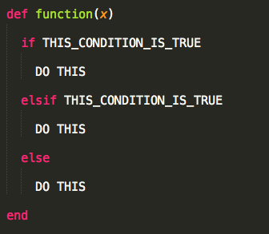

P
Two-Day Bootcamp
What we'll learn
What we'll build
- A simple web application - built with Sinatra and Ruby - that accepts a user's input and returns a list of Reddit article titles with pictures.
Agenda
Today
- How the web works
- Command line
- Data types, methods in Ruby
- LUNCH
- Data collections
- Iterating over a collection
- Getting data from the internet (without a Browser) and doing something with it :)
Agenda
Tomorrow
- HTTP requests
- Sinatra
- Hosting?
Expectations
- It's going to hurt your brain
- Ask questions
- Google is your friend
- We will hit errors
- Use this to trouble shoot
{kind=link}
Your Takeaways
- Consume an API
- Create a simple Ruby application with Sinatra
- Confidence in your ability to troubleshoot and learn on your own

Who am I?
Currently?
- Instructional Deigner - GA, Campus Tech Courses
- Web Developer - Krossover, KrossoverKredit.com
Previously?
What We'll build
FILL THIS IN
Check that we have xcode
In your terminal:
xcode-select -p
/Applications/Xcode.app/Contents/Developer
Opening the Terminal
CommandSpacebarType in "Terminal"
and hit enterCheck that we have homebrew
In your terminal:
brew -v
Homebrew 0.9.5
Check that we have rvm
In your terminal:
rvm -v
rvm 1.26.10
Check that we have rvm
In your terminal:
atom -v
0.158.0
We're ready!!!

Objectives: How the internet works
Describe how clients work with servers to deliver information.
The internet as you know it
It all comes down to requests and responses
You send information out to the web, and based on the info you send, you get information back

HTTP
Stands for "Hyper Text Transfer Protocol"
Allows for communication between a variety of hosts and clients, and supports a mixture of network configurations.
Read: "Makes it easy for computers to talk to each other"
Important Vocab
Host - Client - Request - Response
Predict, with a partner, how these vocabulary words relate to one another. When you're finished, we'll draw a diagram on the board that we will refer back to.
Important Vocab
Host - a computer or other device connected to a computer network. A host may offer information resources, services, and applications (via computer code!) to users or other computers on the network
Examples: Servers and Web Services
Hosts - Servers

Web Services
Let's login to the AWS Console, Heroku
Important Vocab
Client - the requesting program in the client/host relationship
The client initiates an HTTP request message, which is serviced through a HTTP response message in return.
Come up with one example of a client that can send requests.
Clients
Terminals

Clients
Web Browsers

Clients
SQL Programs like Workbench and PGAdmin

Practice with the Terminal as a request client
Open your terminal, and type in the following request:
curl http://www.krossoverkredit.com/users/sign_in
cURL stands for 'Client URL Request Library'
Practice with the Terminal as a request client
Now, try this request:
curl google.com
What do you notice?
Let's practice with a more popular client: the browser
But before we do, let's answer the following questions:
- Predict: How is a request format different in a browser?
- What do you think makes a browser client so special in the way it handles responses?
- How is a request different in a browser?
- What do you think makes a browser client so special in the way it handles responses?
The request is a URL!!!
The browser can take the response and make it pretty

Practice with the Chrome browser client
Open up Chrome and type in 'http://www.krossoverkredit.com/users/sign_in'
Keep in mind, this is the same request and same response, so remember what makes response handling different!
Let's practice with Google again:
- In the browser, go to google.com.
- Then, search for "general assembly".
Talk with a partner
What do you notice about the URL after you searched?
So now that we're experts on requests and responses
- Where do you think front-end development fits into the req/res cycle?
- What about backend development?
Backend vs. Frontend development and languages
- Full-stack development: applications built for the web
- Front-end language: client/browser side code - HTML/CSS/JS
- Back-end languages: code that runs on the server - Ruby/PHP/Python
Let's draw it in our diagram
Server-side vs. Client-Side
Server-side languages control what pages, information is served to the client.
Client-side languages are responsible for displaying information and aesthetics to the user.
Each side's programming, refers to code which runs at the specific machine, the server's or the client's.
Let's draw it out in our diagram
Client: "I'm going to ask for information by explicitly saying where to go and what I need in a URL"
Server: "Based on the request/URL, I'm going to run a particular set of code (Ruby), to send you the information + data you request via HTML/CSS/JS."
Client: "Thank you for this data - I'm going to make it pretty with the HTML/CSS/JS you gave me."
Objectives: How the internet works
Describe how clients work with servers to deliver information.

Objectives: the command line and ruby
Navigate files and folders using the terminal
Run ruby code using the command line
Where does this fit in the big idea?
It all comes down to requests and responses
Let's look to the diagram...
Since we're big time developers
- Leverage the web
- Google, StackOverflow, GitHub
- There is a "right" way to Google
- Be efficient
- Use the keyboard, terminal (command line) as much as humanly possible

The Command Line
Heart of your OS
You can do anything you could do in finder in the command line...but faster
GUI vs. Command Line Demo
"Directory" = "Folder"
Why use the command line?
Want to run a .docx file? Use Microsoft Office
What about an mp3? Open with iTunes
If we want to run a ruby file (.rb) we have to run it using the terminal program
Watch, real quick...
~/Sites/secret_number/jay_nappyBig Idea 1: Functions vs. Parameters
- Just like high school math, functions are a set of instructions that take input, do calculations on that input, and return a result.
- "Input" = "Parameters"
- Parameters are information or data you give to a function
- Example: f(x) = 2x + 4
- Sometimes, functions don't accept parameters
What happens if we do f(3)?
Let's go back to the terminal
Mac:
Applications > Utilitites > TerminalPC: Right click desktop and choose
Git bashTerminal Commands Demo
Remember: Directory = Folder
Find out the present working directorypwdlscdmkdirTerminal Commands Demo
rmdirtouchrmcpatomMoving Between Folders Demo
Move up one directorycd ..- We can chain folders into the ".." parameter
Move to the parent (root) directory
cd ~- We can chain folders onto the "~" parameter too!
Watch me, now.
Your Turn!
From your desktop:
- Create a directory called "days_of_week"
- Create two more directories within the "days_of_week" directory: "weekend" and "weekdays"
- Within the "weekend" directory, create two files: saturday.html and sunday.html
- Within the "weekdays" directory, create five files: monday.html, tuesday.html, etc
Work with a partner!
Bonus:Open each file in atom and add the day of the week in quotes.
What is Git?

- Think Microsoft Office in 1999 - but with "version history" from GooelDocs
- Code manager or "version control software"
- It's wicked smaht
- The real benefit is when you're working in teams...but let's ignore that for now
Let's try it!
into your days directorycd- Let's track this project!
This adds git to your "days" directorygit init
Adds your files as "ready to be saved" (committed)git add
Commits (saves) files to the git timeline or version historygit commit -m 'INSERT A MESSAGE'
Let's check the logs
Shows your commit historygit log
Key Idea 2
With Git, nothing is lost (if you do it right!)
Let's check it out:
- I'm going to break everything in my "days" directory...
- Then I'm going to fix it
So what the heck is GitHub?

- A service that lets you host Git repositories (fancy word for "projects") on the internet
- Allows for easy sharing of code
- There are public sources of code (Reddit) and private sources of code (predict)
If you haven't already, let's take a second to sign up for GitHub
- To prevent problems, use the same email/username you used for your git configurations
Why is GitHub so special for teams?
- Back to the board!
- (Jay: Draw GitHub as a cloud)
Watch me, now.
- I will add some changes to my days of the week
- Then I'll commit those change
- Then I'll push those change to GitHub.com by creating a new project
- Then you will "fork" my changes, so you have them on GitHub
- Then you create a new folder (why?), and "clone" that GitHub repository
Watch you, now.
git clone YOUR_URL@github.comMINI BREAK, BABY!

Recap the morning
- How do clients work with hosts?
- Explain the difference between how the command line handles a response vs. a browser.
- Gary is a co-worker working on a side-project and asked me to help - what should Gary do and what should I do to make sure I can edit Gary's code on my computer?
Objectives
- Create an application that displays directions and accepts user input
- Control the flow of your application based on user input
Lets write some code!
- Why ruby???
- Ruby is a concise, elegant and simple programming language

Ruby

- Created by "Matz" in the mid-90s
- Written in C
- Dynamic scripting language
- Memory is managed for you
- Object oriented, fun
Before we can do any web stuff
- We need to understand Ruby
- First step in order to build any website
Talking to Ruby
- Creating an interactive Ruby terminal:

Data Types
- Now that we're able to write ruby, we must understand that everything in ruby is an object.
- Every object has a "type" or "class":
An object is a software bundle of related state and behavior. Software objects are often used to model the real-world objects that you find in everyday life.
Practice the next few slides with me!
Objects

Let's jump into Krossover's objects...
Data Types: Strings
- any kind of text
- donated by single or double quotes

Data Types: Numbers
Integers

Floats

Variables
Variables are simply a place to store data. The data can take on almost any form. All variables we store as lower case, and separate words are separated by underscores:

Discuss
How could data work with variables in req/resp?
Concatenating Variables
There are two ways to join variables together:
- By simply appending on thing after the other
- String interpolation


Discuss: Could you think of any use cases for this?
Puts
Puts is a method that Ruby "gives you for free". It stands for "PUT" "String", out to the terminal:

Puts always returns 'nil'
Gets
Gets is also a method that Ruby "give you for free". It stands for "GET" "String", requesting it from user input.

What's that \n? It's newline (the user hitting enter)

Let's get down and write some code.
Code along! Strings & Integers

Methods (or functions)
- Let's think back to math, as before:
f(x) = x + 2
Does this function produce anything if you repeat the "instructions"?
Think of functions as variables, but instead of data, they hold code!
Writing Methods
In Ruby, you would write f(x) = x + 2 like:

All methods, in Ruby, start with 'def'
Calling Methods
You call a function exactly the same (as you would in math!)

Methods
And remember, they can accept parameters

Let's practice together!
Methods code along
Running Ruby Code
To run a ruby file, move into the directory your ruby file is in and type:
ruby FILE_NAME.rbWatch, as I move my code along code into a ruby file and run it from the terminal to get the same output.
Let's explain how this relates to req/resp - to the board!.
You try it!
Refactor the code along code (I'll chat it out in a gist in tlk.io) to ask the user for the story name and the number of likes for the story - store that data two variables.
Welcome back!
First, but first HTTPS
Let's get our brains going!
(Jay, reveal/day_2_opening.part1.rb)
Check tlk.io for the kickoff assignment.

Together: create a new directory in exercises titled: "day_2", create a file called kick_off.rb, copy and paste the code from the gist, and initialize a git repository
Part 1: Together - day_2_opening.part1.rb
Part 2: In Pairs - https://gist.github.com/jnappy/17d0d99b7ded311a0eff
Bonus: Push your code to GitHub!
Objectives
use Booleans and conditionals to control the flow of your application
Booleans
Either true or false; these give us the ability to use logic => to choose where and what we want to happen in our application.
true || false
To get boolean values, we operate!
read: "user operators; compare"

That brings us to conditionals: the 'if' statement
The syntax reads

Conditional 'if' statements
The 'elseif'
Watch meh!
I'm going to build a function that asks a user where they live and then tells them whether or not they are cool.
You try it!
Fork it; clone it to your computer; solve it!
https://github.com/jnappy/beer_exercise
Multiple Conditions
This allows you to create an if statement that could be satisfied by multiple conditions
- and

Let's see an easier way to do this...
Multiple Conditionals
or

Predict: an easier way to do this...
Let's try it!!
Fork it, clone it, solve it!
https://github.com/jnappy/admin_exercise
BREAK!!!

Loops: Continue doing stuff...over and over...
While

Loops: Continue doing stuff...over and over...
Until

Loops
Watch mi!!
Let's make a SPAM message until I enter "unsubscribe"
(Jay, Lesson 2 slide 25)
Let's make an Identification method that doesn't let you drink until you're twenty one
Now yew!
Fork it, clone it, solve it: https://github.com/jnappy/secret_numbah

See you soon!!

Data Collections
Let's think back to KrossoverKredit Objects...
Data about an object is a collection of attributes, some of which have other attributes!
Data Collections: Arrays
- Think of arrays as a list, separated by commas
- They are denoted by square brackets around them
- They can have any type of data we want!!!!
names = ['jay', 'erin', 'lindsay', 'david', 'delauno']numbers = [1, 2, 5, 9, 13]misc = ["one", 4, '9', "Two"]What do names, numbers, and misc represent?
An Array is an Object
That means: it has a bunch of attributes and functions we can use!!
Let's access a particular element of an array
names = ['jay', 'erin', 'lindsay', 'david', 'delauno']names[0] => 'jay'NOTE: Indexes start at 0!
All the stuff we can do with an array
Imagine we get a request to get articles from our database...

More stuff we can do with an array
Code along with me:
- add our names to an array (variable) called class
- add "Rob" to the front of the array
- add "Jim" to the back of the array
- remove them both
- ... go crazy, and type in "names." and hit tab...
Why are collections awesome?
We can "iterate" over them!
read: "we can do something to each element in a collections of data"
- Let's take our class array and do something to each element in it
Arrays within arrays
sign_ins = [["jpnappy@gmail.com", "3:02pm"], ["tylernappy@gmail.com", "3:03pm"], ["rob@gmail.com", "3:05pm"], ["lorit@gmail.com", "3:06pm"], ["laura@gmail.com", "3:07pm"], ["jpnappy@gmail.com", "3:02pm"], ["jpnappy@gmail.com", "3:02pm"], ["jpnappy@gmail.com", "3:02pm"], ["jpnappy@gmail.com", "3:02pm"], ["jpnappy@gmail.com", "3:02pm"], ["dan@gmail.com", "3:05pm"]Let's look at this in a text editor
Now, let's get a list of all the user's email addresses
Collections: Hashes
- A hash is like a dictionary, a set of "keys" and corresponding "values"
- For every word, there is a corresponding definition
- In between the key and value is a hash rocket ( => ) or a colon
person = {'name' => 'Jay', 'age' => 28}This is great for objects!
Let's build on this object
We can write hashes like this too!
person = {name: 'Jay', age: 28}These are called 'symbols' (just like strings, don't focus on them!!)
Symbols
Symbols are just like strings, the only difference is they're more efficient - they only get stored once
They're always denoted by a : and have lowercase letters with underscores.
Let's show some symbols vs. strings on the projector (lessons/3/slides/17)
Collections: Hashes
We got sweet methods on hashes too!
person.keysperson.valuesperson.sizeLet's practice adding new values and retrieving values from a hash
Retrieving values from a hash
person['name']person['age']person[:name]person[:age]Collections: Hashes
Let's try with a larger collection: hash + array (object)
blog_post = {
title: 'What Makes A Star Starry? Is It Me?',
body: "Notice what Tyler Nordgren does in these posters. He's an artist, an astronomer (from Cornell, Carl Sagan's department);",
author: {
first_name: 'Robert',
last_name: 'Krulwich',
twitter_handle: '@rkrulwich'
},
tags: ['art', 'education', 'science']
}When looking at any collection...
- Look at where [] or {} start and end
- Look for commas
- Look for symbols vs. strings in keys
- Typically, you have an array of hashes!
Let's look at a collection of blog posts
blog_posts = [
{
title: 'What Makes A Star Starry? Is It Me?',
body: "Notice what Tyler Nordgren does in these posters. He's an artist, an astronomer (from Cornell, Carl Sagan's department);",
author: {
first_name: 'Robert',
last_name: 'Krulwich',
twitter_handle: '@rkrulwich'
},
tags: ['art', 'education', 'science']
},
{
title: 'The Meter: The Measure of a Man',
body: "About six and a half billion people use the metric system every single day. That's more than the citizens of any single nation, the followers of any single religion or the speakers of any single language.",
author: {
first_name: 'Latif',
last_name: 'Nasser',
twitter_handle: '@latifnasser'
},
tags: ['discovery', 'dialogues', 'history', 'meter', 'science', 'storytelling']
},
{
title: 'Shattering Silence and An Eye of God',
body: "In our Morality show, we tell the story of Eastern State Penitentiary -- a radical new kind of prison engineered to crack into the hearts and minds of 19th-Century criminals",
author: {
first_name: 'Brenna',
last_name: 'Farrell',
twitter_handle: '@brennacfarrell'
},
tags: ['history', 'morality', 'prison']
}
]
Let's store each blog post into a variable to make this feel a bit easier...
Other things we can do to the title...
Let's do the following:
- iterate over each blog post and print out the title
- iterate over each blog post and print out the author info...
- iterate over each blog post and print out just the authors name
- iterate over each blog post and print out the title, the author, and the tags associated with it
URL Stuff
The center of communication via the web are request messages that are sent via Uniform Resource Locators
Let's look at an example on the board...
URL
The center of communication via the web are request messages that are sent via Uniform Resource Locators

Fragments
Hit the next arrow...
... to step through ...
... a fragmented slide.
Fragment Styles
There's different types of fragments, like:
grow
shrink
fade-out
current-visible
highlight-red
highlight-blue
Transition Styles
You can select from different transitions, like:
None -
Fade -
Slide -
Convex -
Concave -
Zoom
Themes
reveal.js comes with a few themes built in:
Black (default) -
White -
League -
Sky -
Beige -
Simple
Serif -
Blood -
Night -
Moon -
Solarized
Slide Backgrounds
Set data-background="#dddddd" on a slide to change the background color. All CSS color formats are supported.
Image Backgrounds
<section data-background="image.png">Tiled Backgrounds
<section data-background="image.png" data-background-repeat="repeat" data-background-size="100px">Video Backgrounds
<section data-background-video="video.mp4,video.webm">... and GIFs!
Background Transitions
Different background transitions are available via the backgroundTransition option. This one's called "zoom".
Reveal.configure({ backgroundTransition: 'zoom' })Background Transitions
You can override background transitions per-slide.
<section data-background-transition="zoom">Pretty Code
function linkify( selector ) {
if( supports3DTransforms ) {
var nodes = document.querySelectorAll( selector );
for( var i = 0, len = nodes.length; i < len; i++ ) {
var node = nodes[i];
if( !node.className ) {
node.className += ' roll';
}
}
}
}
Code syntax highlighting courtesy of highlight.js.
Marvelous List
- No order here
- Or here
- Or here
- Or here
Fantastic Ordered List
- One is smaller than...
- Two is smaller than...
- Three!
Tabular Tables
| Item | Value | Quantity |
|---|---|---|
| Apples | $1 | 7 |
| Lemonade | $2 | 18 |
| Bread | $3 | 2 |
Clever Quotes
These guys come in two forms, inline:
“The nice thing about standards is that there are so many to choose from”
and block:
“For years there has been a theory that millions of monkeys typing at random on millions of typewriters would reproduce the entire works of Shakespeare. The Internet has proven this theory to be untrue.”
Intergalactic Interconnections
You can link between slides internally, like this.
Speaker View
There's a speaker view. It includes a timer, preview of the upcoming slide as well as your speaker notes.
Press the S key to try it out.
Export to PDF
Presentations can be exported to PDF, here's an example:
Global State
Set data-state="something" on a slide and "something"
will be added as a class to the document element when the slide is open. This lets you
apply broader style changes, like switching the page background.
State Events
Additionally custom events can be triggered on a per slide basis by binding to the data-state name.
Reveal.addEventListener( 'customevent', function() {
console.log( '"customevent" has fired' );
} );
Take a Moment
Press B or . on your keyboard to pause the presentation. This is helpful when you're on stage and want to take distracting slides off the screen.
Much more
- Right-to-left support
- Extensive JavaScript API
- Auto-progression
- Parallax backgrounds
- Custom keyboard bindings